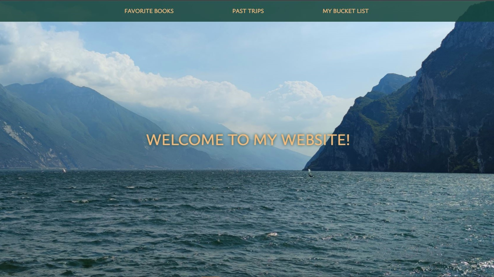

Project overview
This project is an interactive personal website that
I initially developed as part of the CS50: Introduction to Computer Science course to sharpen my skills in JavaScript, HTML, and CSS.
Later, I restructured it to incorporate more JavaScript and enhance its interactivity and visual appeal.
The website features a responsive design with parallax scrolling, a carousel displaying my favorite books,
and two tab lists presenting my past trips and travel bucket list.
Technologies used
- JavaScript
- HTML
- CSS
- Responsive design
Key features
I created a visually appealing parallax scrolling effect using simple CSS code, enhancing the user experience as they navigate through the site.

The carousel showcases my favorite books, complete with their covers and descriptions.
Users can hover over each book to reveal its description and navigate through the carousel using left and right arrow buttons implemented with JavaScript.
The website features two tab lists, which I developed following the course on Scrimba with Kevin Powell.
Later, I adjusted the code to work for more than one tab list. The first tab list presents my past trips, including the countries I have visited and the places I have been within those countries.
The second tab list displays my travel bucket list, which contains countries I wish to visit and specific locations within those countries.
The responsive navigation menu appears horizontally on larger screens and transforms into a hamburger icon on smaller ones.
When clicked, the icon expands into a vertical menu and switches to an 'X', signaling the option to close.
Challenges and solutions
In this project, I developed a responsive web page using JavaScript and CSS,
featuring a navigation menu, a book carousel with description overlays,
and tabbed sections for past trips and bucket lists.
The navigation menu includes a hamburger icon for small screens, the carousel enables navigation using arrows,
and the tabbed sections offer keyboard navigation support.
-
To build the responsive navigation menu, JavaScript event listeners, CSS media queries, and CSS transitions were employed.
The menu appears horizontally on larger screens and transforms into a hamburger icon on smaller ones.
When clicked, the icon expands into a vertical menu and switches to an 'X', signaling the option to close.
-
I created the book carousel by showcasing a collection of horizontally arranged book items, navigable via left and right arrows.
When hovering over a carousel item, a description overlay is displayed.
I ensured responsiveness by adapting the carousel's width and the number of visible items based on screen size.
-
The past trips and bucket list areas utilize a tabbed interface for content display.
Clicking a tab reveals corresponding content and images, while concealing others.
Arrow key-based keyboard navigation is supported by the tabs.
Learning outcomes
Through this project, I have gained valuable experience and sharpened various skills:
- Responsive navigation bar creation: Creating a responsive navigation bar that includes a menu button, with JavaScript event listeners, to toggle visibility of navigation items and dynamically change the icon based on the current state.
- Carousel implementation: Building an interactive carousel with left and right arrow controls using JavaScript, allowing users to navigate through carousel items seamlessly.
- Accessible tabs system: Creating an accessible tabs system with focus management, enabling users to navigate through tabs using arrow keys and displaying corresponding content and images upon tab selection with JavaScript event handling.
- CSS variable usage: Employing CSS variables to define color schemes and other shared values, facilitating effortless customization.
- Responsive design implementation: Constructing a responsive layout that adapts to various screen sizes using media queries, ensuring compatibility across devices.
- Advanced CSS styling techniques: Applying a range of CSS styles, such as transforms, transitions, and grid layouts, to produce an aesthetically appealing and functional user interface.
Project source code:
Github